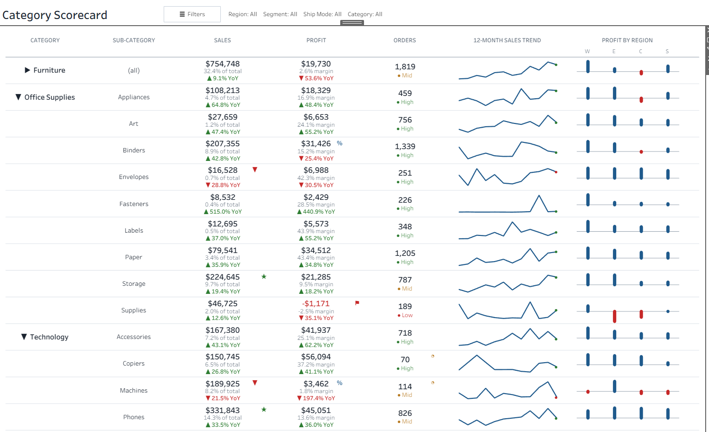

Custom Tables with Tableau Map Layers
A category scorecard built entirely from map layers on one sheet: stacked values, flag icons, sparklines and profit-by-region bars.
Tableau builds I've made, each with a write-up of how it works and what I learned along the way. Data is public sample data unless noted.

A category scorecard built entirely from map layers on one sheet: stacked values, flag icons, sparklines and profit-by-region bars.